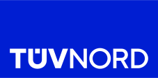
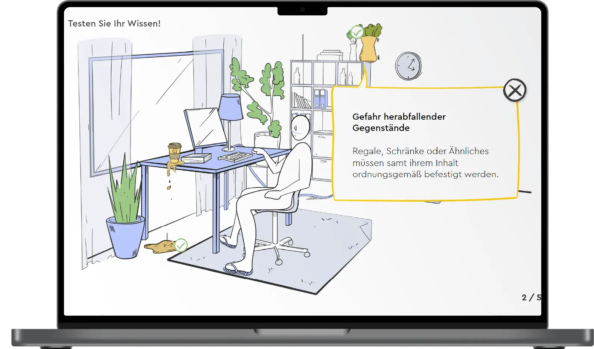
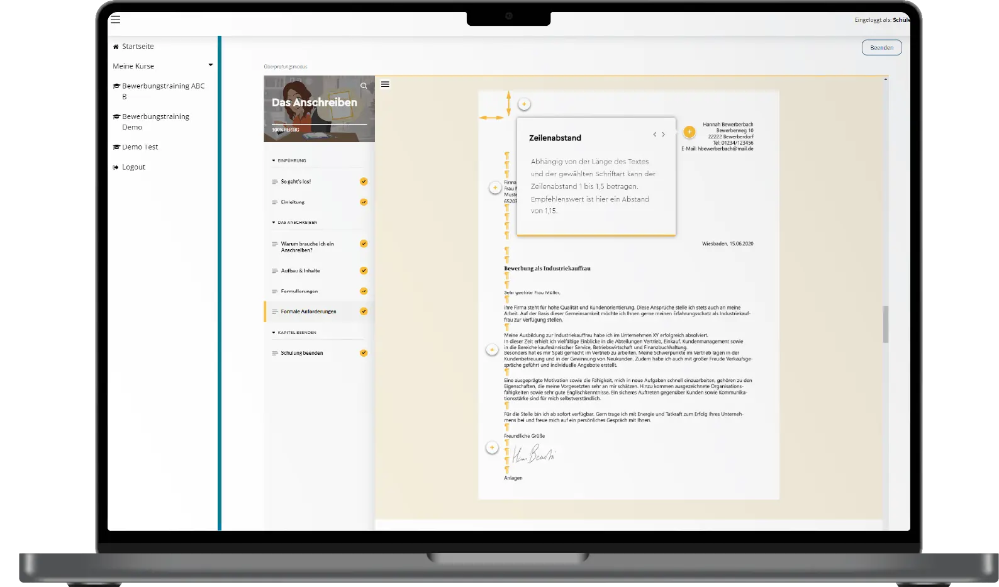
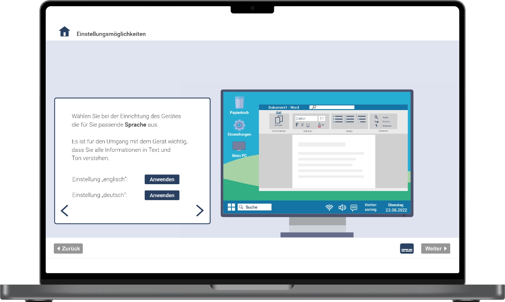
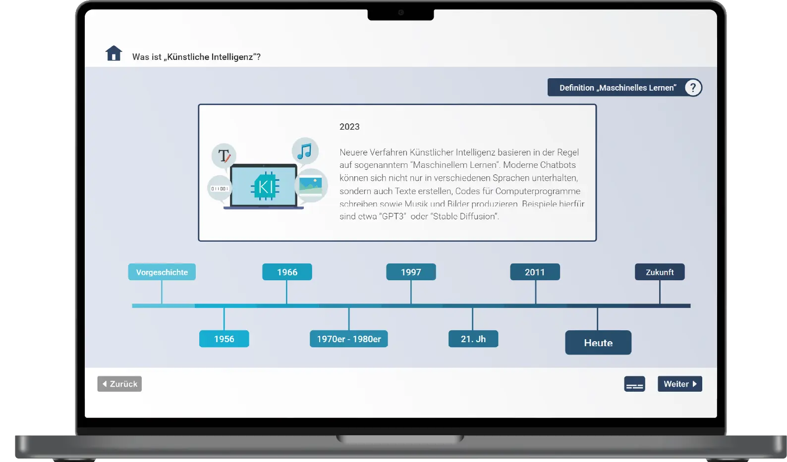

Portfolio
Projekte aus 15 Jahren E-Learning
Online-Akademien, Lernplattformen und Lerninhalte für Bildungsanbieter, Verlage, Forschung und Unternehmen. Eine Auswahl, mit der Entscheidung, die das jeweilige Projekt getragen hat.
Architektur · Plattform · Learning Content
TÜV NORD Akademie
Von null zur Online-Akademie
Konzeption & Architektur: Daniel Egerer

Ausgangslage
Die TÜV NORD Akademie hatte bis dahin keine eigene Online-Akademie. Pflichtunterweisungen im Arbeitsschutz wiederholen sich regelmäßig und betreffen viele Mitarbeitende gleichzeitig, in Präsenz ein hoher Koordinationsaufwand.
Umsetzung
Über 50 web-basierte und videobasierte Trainings zu Pflichtunterweisung, Arbeitssicherheit und Compliance, mit Interaktionen, Storytelling, Animationen und Wissensabfragen.
Ergebnis
Die Online-Akademie ist erfolgreich gestartet. Pflichtunterweisungen laufen seitdem digital statt in Präsenz: flexibel, ortsunabhängig und ohne Terminabstimmung für ganze Belegschaften.
Architektur · Plattform · Learning Content
STARK Verlag
Vom Buch zur digitalen Lernwelt
Konzeption & Architektur: Daniel Egerer

Ausgangslage
Der STARK Verlag ist Marktführer in der Abitur-Prüfungsvorbereitung und einer der renommiertesten Bildungsverlage Deutschlands. Über die bewährten Bücher hinaus wollte der Verlag Abschlussklassen individuell unterstützen, Lehrkräfte mit Webinaren fördern und junge Menschen auf den Einstieg ins Berufsleben vorbereiten.
Umsetzung
Lernplattform im STARK-Design mit Zoom-Anbindung für Webinare, automatischer Zertifikatsvergabe, Marketing-Analyse und Webshop-Integration. Dazu ein Bewerbungstrainer, entwickelt mit erfahrenen Bewerbungstrainern: E-Learnings zu Unterlagen, Vorstellungsgespräch und Microsoft Word, storybasiert, mit Realfilm, Praxisbeispielen und Material zur Selbstanalyse.
Ergebnis
Aus einem Buchverlag wurde ein Anbieter mit eigener digitaler Lernwelt. Der Bewerbungstrainer ist bei verschiedenen Kunden des Verlags im Einsatz und begleitet junge Menschen auf dem Weg von der Schule in den Beruf.
Architektur · Learning Content
Bildungswerk der Niedersächsischen Wirtschaft
Erst messen, dann lernen
Konzeption & Architektur: Daniel Egerer

Ausgangslage
Das BNW zählt mit 59 Standorten und über 1.000 Mitarbeitenden zu den führenden Bildungsunternehmen in Niedersachsen. Ziel war, Arbeitsuchende bei ihren digitalen Grundkompetenzen zu stärken, und zwar so leicht zugänglich und motivierend wie möglich.
Umsetzung
Digitaler Kompetenzfeststellungstest und darauf abgestimmte E-Learnings, zugeschnitten auf die Zielgruppe: einfache Sprache, Hintergrundinformationen, Begriffserklärungen und Praxisbeispiele.
Ergebnis
Test und E-Learnings machen digitale Grundbildung für Arbeitsuchende zugänglich: in einfacher Sprache, im eigenen Tempo und genau dort, wo Wissen fehlt.
Architektur · Learning Content · KI
Forschungsinstitut Betriebliche Bildung (f-bb)
Lernpfade, die sich anpassen
Konzeption & Architektur: Daniel Egerer

Ausgangslage
Das f-bb entwickelt mit rund 160 Mitarbeitenden die berufliche Bildung im In- und Ausland weiter. Im Projekt KIPerWeb, gefördert vom BMBF in der Förderlinie INVITE, ging es um KI-gestützte Personalisierung in der beruflichen Weiterbildung. Gebraucht wurden Einstiegskurse zu digitalen Kompetenzen und KI, die passgenaues, individuelles Lernen ermöglichen.
Umsetzung
Einstufungstest und E-Learnings zu digitalen Kompetenzen und Künstlicher Intelligenz, verbunden über KI-gestützte Inhaltsempfehlungen und individualisierte Lernpfade.
Ergebnis
Teilnehmende bearbeiten genau die Inhalte, die zu ihrem Wissensstand passen, statt alle denselben Kurs zu durchlaufen.
Ihr Projekt als nächstes?
In einem ersten Gespräch klären wir, wo Sie stehen und welche Architektur zu Ihrer Lernwelt passt.